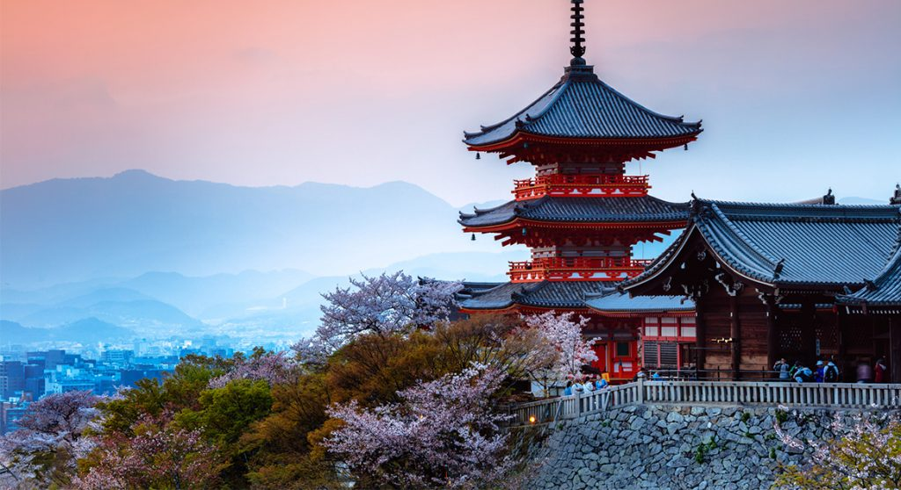

Japan Kyoto
Kyoto wordt beschouw als de culturele hoofdstad van Japan en een belangrijke toeristische bestemming. Het staat bekend om de talloze boeddhistische tempel, Shinto-heiligdommen, paleizen en tuinen die allemaal op de werelderfgoed lijst staan. Des tijds was dit ook de keizerlijke hoofdstad van Japan. Kyoto is ook velen maler goedkoper dan Tokyo en staat ook bekend als een van de goedkoopste bestemmingen mogelijk. Als je opzoek bent naar meer rust en niet naar drukke steden wilt reizen zal Kyoto de perfecte bestemming zijn.
